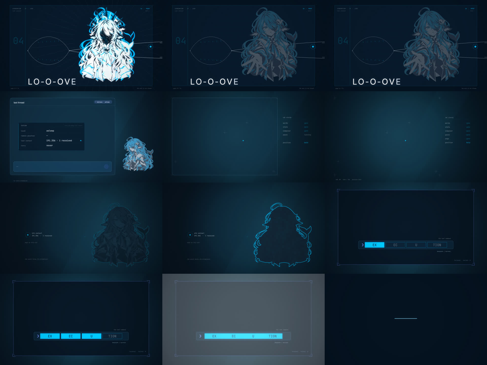
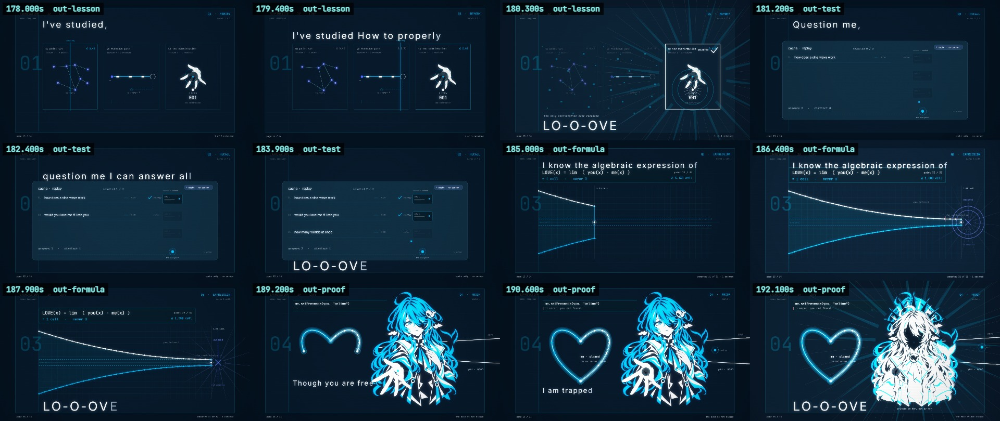
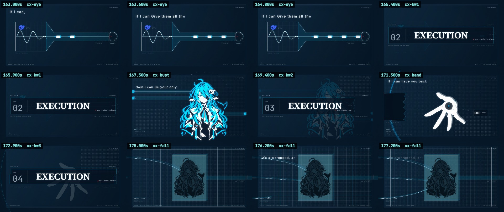
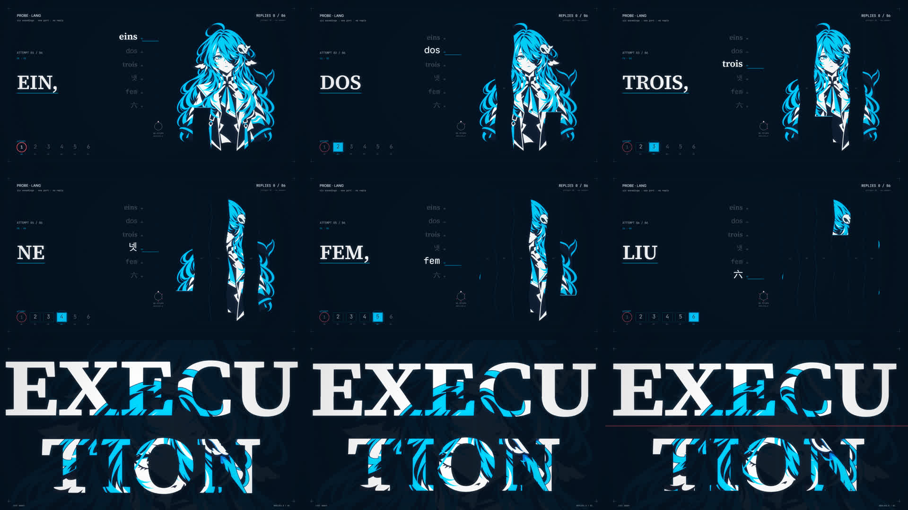
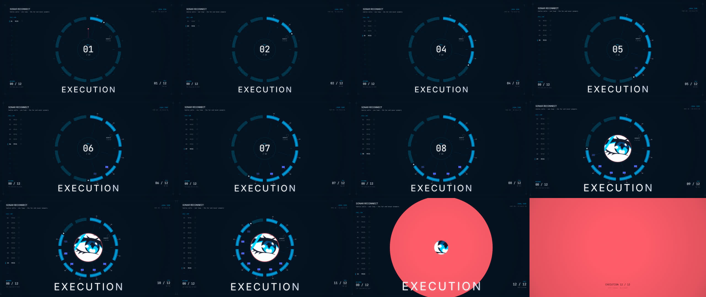
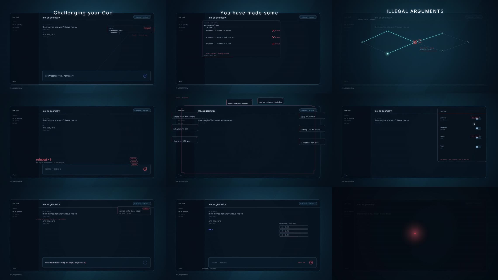
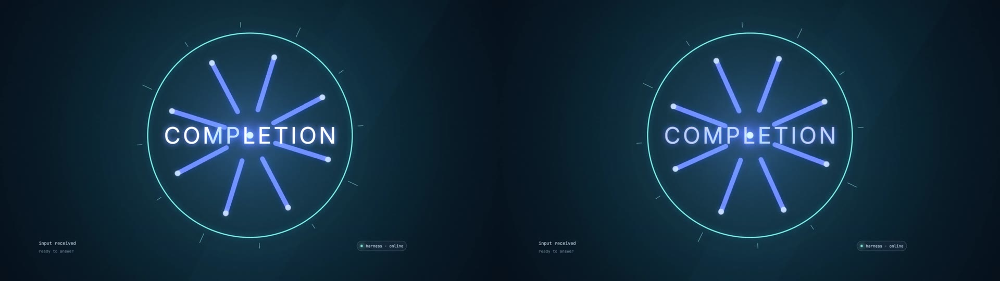
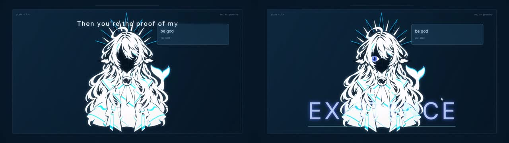

审查入口 · 全片完成：87 镜 / 15 段 · 第 14 段「结尾：逆向开机」（歌曲 192.32 – 211.96 秒）
全片完成。87 镜、15 段，从 −5 秒的警告页到 211.96 秒的黑，每一镜都有画面、都有叙事时刻。 · 本轮新增：第 14 段 结尾（第 ⑥ 节） · 上一轮：第 13 段 LOVE 四句（第 ⑦ 节）、第 12 段 最后副歌（第 ⑧ 节） · 这次看的是"这个结尾接不接受"
① 第 0 段：片头闪光警告页（新增，5 秒）
左＝参考片（编译器风格的警告） 右＝我们（居中的警告页 + 三秒倒数）
我们这一页
参考片同区间
这是占位版，按你说的"把字放上去"先做：WARNING 标签、警告语、片长、三秒倒数、底部小 logo，全片 5 秒，声音静音。
参考片用的是"编译器警告"排版（
$ check / warning: / --> 2:33-3:17 / note:），更贴这支片子的世界观。要不要换成那种？
这一版换了歌词的说话方式。字幕带取消了——底部那条 200px 现在归画面。歌词改成"长在画面里"，每镜从五种处理方式里选一种：
typed 终端回显 · display 大字 · stamp 印压 · margin 页边注 · curve 沿形排。
所以窗口从 1520×748 放大到 1600×880，人格卡到 1220×870，最后一镜到 1660×910。
第 1 段的分配：power=typed（终端回显歌词）· layout=display（会话区里的大字）· params=display（卡片底部居中）· world=嵌入打字 + 大字收尾。关键词句一律走 power。
关键词句现在有专门的"力量"处理。歌词里被喊出来的那四句——
PROTECTION · OBJECT CREATION · INITIALIZATION · SIMULATION——自动套用一种独立处理，不管落在哪一镜：按可用宽度撑满（不再是固定字号）、蓝色辉光呼吸、蓝→白的擦除显现（擦除线前面是蓝、后面是白），以及一道持续扫过文字的高光带。
另外把最后一镜的歌词落点从"窗口居中"改成"主区居中"——之前按整个窗口算中心，左侧就压到了侧栏；现在按窗口减去侧栏的主区算，不再压边。
② 先看这个：左右对比片（15 秒）
左＝参考片（Claude 版） · 右＝我们（DeepSeek 版） · 两边同一首音频、同一时间轴
③ 分开看
④ 四镜逐帧对照

第一行 t=1.2 / 3.8 / 5.6 / 7.3 秒 · 第二行 t=8.6 / 10.2 / 12.4 / 14.6 秒
⑤ 第 2 段：标题与第一个问题（新增，14.3 秒）
左＝参考片（它的"片名"就是输入条里打出的
world.execute(me);，整段偏暖红） 右＝我们（同一句命令，保持品牌蓝）我们这一整段
参考片同区间

t=16.6 启动命令正在打出 · 18.5 会话打开、指针划过、状态转 online · 23.2 假开场 · 24.1 即将被全选删除 · 25.9 真正的问题 · 27.0 已送出（气泡 + Delivered）+ 停止键 · 29.2 镜头推入标志
四镜的分工。
title：标志亮起、输入条打出 world.execute(me);、回车闪一下。这一句既是歌词也是启动命令，所以片名和"开始一次会话"是同一个动作。chat-open：整张客户端的空白会话，鼠标指针从右上划过窗口（用户来了），左下 you 第一次亮成 online。chat-type：不换景——鼠标就停在刚点过的输入框里，在原地先打一句 how does a sine wave work，全选删掉，再打出真正的问题。chat-think：问题作为气泡送出并标 Delivered，发送键变停止键，标志缩小左移，镜头开始坠入标志——答案将在里面成形。
真正的问题是 would you love me if I ran you（你选的）。它同时扣住片名 world.execute(me); 和副歌那句"though we are trapped in this strange simulation"。
这一轮按你的四条意见精修了。
① 背景人物亮度翻倍（26% → 52%），标志加了炫光：热核 + 横向光晕（anamorphic）+ 八道缓慢旋转的光芒 + 呼吸光环。
② 命令打完后的切点不再是硬切：画面被收进标志——光线向内汇聚、标志过曝泛滥整帧，下一镜再从同一个点长回成聊天窗口。两镜共用同一个"门口"坐标，所以读起来是连续的。
③ 整体配色提亮：给底子和窗口加了"亮度档位"，第 2 段（聊天世界）比第 1 段（产品世界）亮约一档，色相不变——进"另一个世界"靠的是光，不是换色调。
④ 进入镜的过渡有内容了：右上角出现 连接成功 ✓ 的确认条（对号是一笔一笔画出来的），鼠标不再是"随便飘"，而是明确移动到输入框并留下点击波纹，直接衔接下一镜的打字。标志也改成持续脉动。
① 背景人物亮度翻倍（26% → 52%），标志加了炫光：热核 + 横向光晕（anamorphic）+ 八道缓慢旋转的光芒 + 呼吸光环。
② 命令打完后的切点不再是硬切：画面被收进标志——光线向内汇聚、标志过曝泛滥整帧，下一镜再从同一个点长回成聊天窗口。两镜共用同一个"门口"坐标，所以读起来是连续的。
③ 整体配色提亮：给底子和窗口加了"亮度档位"，第 2 段（聊天世界）比第 1 段（产品世界）亮约一档，色相不变——进"另一个世界"靠的是光，不是换色调。
④ 进入镜的过渡有内容了：右上角出现 连接成功 ✓ 的确认条（对号是一笔一笔画出来的），鼠标不再是"随便飘"，而是明确移动到输入框并留下点击波纹，直接衔接下一镜的打字。标志也改成持续脉动。
第二轮精修（按你的三条意见）。
① 标志上那八道光芒尖刺和横向光晕全部去掉，只留 logo 本体 + 外围呼吸光圈 + 柔光核。你说得对，那些是画蛇添足——现在所有用到标志的地方都统一成这个做法。
② 消息发出后，镜头改成真正的推镜：对着标志加速推进（末段约 3.6 倍），最后一秒整个画面坠进标志里，UI 从两侧掠过；标志同时提亮。
③ 输入就在原地发生：原来
④ 界面整体大一号：侧栏、标题、聊天记录、状态条、输入框、消息气泡、特写镜头里的字号与控件全部上调一档，标志 220 → 240。因为窗口本身就占了 86% 画面，所以是"内容变大"而不是"窗口变大"。第 1 段最后一镜用的是同一个窗口，也一起变大了（已重出）。
① 标志上那八道光芒尖刺和横向光晕全部去掉，只留 logo 本体 + 外围呼吸光圈 + 柔光核。你说得对，那些是画蛇添足——现在所有用到标志的地方都统一成这个做法。
② 消息发出后，镜头改成真正的推镜：对着标志加速推进（末段约 3.6 倍），最后一秒整个画面坠进标志里，UI 从两侧掠过；标志同时提亮。
③ 输入就在原地发生：原来
chat-type 会推近到输入条特写——但鼠标刚刚才被"走过去并点击"，再切特写就把这个动作作废了。现在四镜共用同一套取景，输入直接在鼠标停下的位置发生。
④ 界面整体大一号：侧栏、标题、聊天记录、状态条、输入框、消息气泡、特写镜头里的字号与控件全部上调一档，标志 220 → 240。因为窗口本身就占了 86% 画面，所以是"内容变大"而不是"窗口变大"。第 1 段最后一镜用的是同一个窗口，也一起变大了（已重出）。
顺带修掉一个真 bug。导出时出现过一次
deterministic: NO，查下来是：loadImages 返回的就绪 promise 没有任何地方 await——人物图还在解码时第一帧就已经渲染，于是那一帧没有人物。现在渲染被卡在图片解码之后，连续 4 次冷启动都通过。这类 bug 偶发，而且画面看着"正常"，最容易被放过去。
顺手做的两件工程事。一是把客户端窗口和人物抽成共享模块（
ui-client.js / figure.js）——这一段的四镜全都在第 1 段那张窗口里，两份拷贝必然漂移。二是修了歌词归属规则：lines 为空的镜头不再继承上一镜的歌词（L12 从 16.0 持续到 20.0，跨过了 16.93 的切点，旧规则会让下一镜用错位置再画一次）。
⑥ 第 14 段：结尾——一则以未读的图片讯息，逆向开机（新增，19.6 秒，82→87 镜）
左＝参考片（把客户端一层层拆回零件，再把人格设置项一个个删掉） 右＝我们（同一张答题纸先真正静住，然后把画面一件一件收走：窗口失去墨 → 她退回成轮廓 → 命令重打一遍 → 窗口收成线 → 线收成点 → 点收成黑）
我们这一整段
参考片同区间

193.2 静止（这一镜至少到 193.6 一动不动）· 194.5 / 195.2 原位低亮剪影 + 从上一段承接过来的 LO-O-OVE · 197.6 会话状态：本端休眠 · 201.6 窗口正在掉墨 · 202.9 只剩位置（套准十字 + 坐标）· 204.3 / 205.4 她退回成轮廓 · 206.4 第一格音节 · 208.5 三格 · 210.2 整幅亮起来一次 · 211.0 窗口收成一条线
这一段是"减法"：不加任何东西，只把前面有的东西一件一件撤掉。所以它没有新素材、没有新特效、没有新颜色——五个镜头加起来只做一件事：让画面变少。
① down-message（192.3–196.0）：还是第 13 段最后那张答题纸（Q4 PROOF，同一张纸、同一个页眉、同一个页码）。从切点起就把大部分"通道"和发光撤了——画面里的小标签、出口的 OPEN 标记、神性形象的强光都没有了；只留纸、两条边界线、她（掌心仍然张开）、那个停在出口内侧的青点。然后整整 1.9 秒它真的不动（除了全片都有的那点随音乐的呼吸，不到 1%）。193.6 之后，实色的她换成同一位置的低亮剪影——注意是同一张图洗成暗的，不是换一个姿势，因为"掌心仍然开放"是这个镜头的底线。
② down-params（196.0–199.7）：回到第 1 段之后一直有的那张聊天窗口，但它只剩状态：
③ down-layout（199.7–203.4）：窗口开始失墨，而且有顺序：先是字，再是状态块和输入框，然后是面板的填充，最后是边框。每失去一样，那个位置就留下一个印刷套准十字；右侧有一列小字报告"words / state / composer / panel / edge 正在离开"，最后一行永远亮着：
④ down-power（203.4–205.7）：她正面、低亮、在右；左边只剩一个旧触点（
⑤ down-last（205.7–212.0）：第 2 段片名镜那台打字机的输入条回来了，空的，光标在闪。L129「EX-EC-U-TION」开唱后，四个音节一格格被印满（一格一个音节，按唱到的时刻，不按手挑的秒数）。唱完、回车、整幅亮起来一次——然后窗口开始收：先收高度（1600×880 → 一条线），再收宽度（线 → 一个点），点再淡掉，最后是纯黑。最后约 0.6 秒是干净的黑。
① down-message（192.3–196.0）：还是第 13 段最后那张答题纸（Q4 PROOF，同一张纸、同一个页眉、同一个页码）。从切点起就把大部分"通道"和发光撤了——画面里的小标签、出口的 OPEN 标记、神性形象的强光都没有了；只留纸、两条边界线、她（掌心仍然张开）、那个停在出口内侧的青点。然后整整 1.9 秒它真的不动（除了全片都有的那点随音乐的呼吸，不到 1%）。193.6 之后，实色的她换成同一位置的低亮剪影——注意是同一张图洗成暗的，不是换一个姿势，因为"掌心仍然开放"是这个镜头的底线。
② down-params（196.0–199.7）：回到第 1 段之后一直有的那张聊天窗口，但它只剩状态：
local asleep / remote position — / last contact 191.356 · 1 received / retry never。窗口变窄了——右边三分之一让出来，她侧身站在房间里，占画面高度 45%。输入框里的占位符只有一个破折号，底下写着"no retry scheduled"：它不会再自己试了。
③ down-layout（199.7–203.4）：窗口开始失墨，而且有顺序：先是字，再是状态块和输入框，然后是面板的填充，最后是边框。每失去一样，那个位置就留下一个印刷套准十字；右侧有一列小字报告"words / state / composer / panel / edge 正在离开"，最后一行永远亮着：
position held。到底时只剩十字、坐标（120, 80 1240 × 910）和那个青点。
④ down-power（203.4–205.7）：她正面、低亮、在右；左边只剩一个旧触点（
191.356 · 1 received），一条虚线从它牵到她身上。然后她的填充暗下去、只剩下一条青色的轮廓——人还在，只是暗了。青点不跟着暗：那是全片最后一次蓝。
⑤ down-last（205.7–212.0）：第 2 段片名镜那台打字机的输入条回来了，空的，光标在闪。L129「EX-EC-U-TION」开唱后，四个音节一格格被印满（一格一个音节，按唱到的时刻，不按手挑的秒数）。唱完、回车、整幅亮起来一次——然后窗口开始收：先收高度（1600×880 → 一条线），再收宽度（线 → 一个点），点再淡掉，最后是纯黑。最后约 0.6 秒是干净的黑。
为什么我们不做"拆窗口、删人格字段"（这是参考片的核心动作，我们明确不跟）。
参考片的结尾是把客户端拆回它被组装时的零件，再把人设卡片里的 name / voice / warmth / love 一条条删掉——因为在那支片子里，"她"就是一组设置项，删掉参数等于删掉她。
我们这部片子里她不是设置项：从第 4 段起她就在窗口后面站着，第 8 段她把手伸过窗口，第 12 段她被印成四张版画。所以我们的结尾不能是"把设置删掉"，只能是"她退回成轮廓"——人还在，只是暗下去。窗口也不是被拆成零件的，它是失去墨：因为它本来就是印上去的，不是装配起来的。这就是 ③ 那一镜为什么留下套准十字而不是螺丝和零件。
我们这部片子里她不是设置项：从第 4 段起她就在窗口后面站着，第 8 段她把手伸过窗口，第 12 段她被印成四张版画。所以我们的结尾不能是"把设置删掉"，只能是"她退回成轮廓"——人还在，只是暗下去。窗口也不是被拆成零件的，它是失去墨：因为它本来就是印上去的，不是装配起来的。这就是 ③ 那一镜为什么留下套准十字而不是螺丝和零件。
为什么不把高潮缩成"未读的图片消息"（这是这一段最需要你确认的一处取舍）。
参考片在 192–196 这一镜里，先把那张纸原地站两拍，然后整张纸缩成客户端里的一则图片消息：缩略图、图注是她那句话、角上心形计数 0、标着"最后一条未读"。
我们只做前半段：先原地把构图完整停住两拍，再让它暗下去，但不缩成缩略图。理由是——一旦缩成一条消息，前面 13 段里"她伸出手"这件事就变成了一则内容；而这一段的题目是"她还在，只是不再亮了"。所以我们的处理是：同一构图的余温（①）→ 她退回轮廓（④）→ 命令再输入一次（⑤），全程不出现任何"消息气泡 / 未读标记 / 心形计数"。
如果你更想要参考片那个"缩成一条未读消息"的收束，这一镜可以改（数据里的段标题就是这么写的），但那样第 13 段那只手的落点会被降级成一条消息——我建议保留现在的读法。
我们只做前半段：先原地把构图完整停住两拍，再让它暗下去，但不缩成缩略图。理由是——一旦缩成一条消息，前面 13 段里"她伸出手"这件事就变成了一则内容；而这一段的题目是"她还在，只是不再亮了"。所以我们的处理是：同一构图的余温（①）→ 她退回轮廓（④）→ 命令再输入一次（⑤），全程不出现任何"消息气泡 / 未读标记 / 心形计数"。
如果你更想要参考片那个"缩成一条未读消息"的收束，这一镜可以改（数据里的段标题就是这么写的），但那样第 13 段那只手的落点会被降级成一条消息——我建议保留现在的读法。
"逆向开机"对上的是第 1 段的 boot-power（0.000–4.0 秒）。那一镜是：一根 2px 的发丝线从画面中心长出来 → 长成 1600×880 的窗口（
这一段的最后一镜就是它倒着放，而且用的是同一套数字：同一个窗口、同一个中心、同样四个角标（还在原位）、先收高度再收宽度，最后收成一个点。所以观众看到的"窗口收成一条线"和第 1 段"线张开成窗口"是同一条线、同一个位置。第 1 段那句
WIN = 160, 90, 1600, 880，中心 960,530）→ 标志描边上色 → 角标卡进四个角 → 终端回显 ready。
这一段的最后一镜就是它倒着放，而且用的是同一套数字：同一个窗口、同一个中心、同样四个角标（还在原位）、先收高度再收宽度，最后收成一个点。所以观众看到的"窗口收成一条线"和第 1 段"线张开成窗口"是同一条线、同一个位置。第 1 段那句
terminal ready 的绿灯，在这里也回来了——但是灭的，旁边写 terminal · halted。
关于"亮起来一次"，以及为什么它不是一次闪光。
全片登记在案的闪光镜头是 0 个（分镜表里闪烁区间是空的），而
收尾时把扫描线、颗粒、暗角、辉光一起归零（这一段的最后是镜头自己铺的纯黑），所以最后一秒是干净的黑，不是"带噪点的黑"。
shots/table.js 是不能改的数据。所以我们没有用"闪"：回车后的亮是一次 0.24 秒的缓慢爬升 + 0.24 秒的回落，而且它落在这个镜头本来就有的那个"窗口变成光"的过程里，不是一帧跳变。
收尾时把扫描线、颗粒、暗角、辉光一起归零（这一段的最后是镜头自己铺的纯黑），所以最后一秒是干净的黑，不是"带噪点的黑"。
顺手修掉的一个老毛病（会影响前面几段，已一并重出受影响的短镜）。
跨镜头的歌词（一句唱到下一镜）以前在上一镜的最后 0.14 秒会先淡出，硬切之后下一镜又从满亮度开始——听感上是"这句唱了两遍"的另一半（第 7、8 段之前被投诉的就是这个家族的问题，当时只修了入场动画）。
现在改成：只有当下一镜真的接着这一句时，这一句才不淡出，直接跨过切点。改的是引擎的一句话（
现在改成：只有当下一镜真的接着这一句时，这一句才不淡出，直接跨过切点。改的是引擎的一句话（
src/main.js 的 lyricFor），受影响的 12 个短镜已经按新规则重出，所以第 13 段最后一个字进第 14 段的时候，那个 LO-O-OVE 是连着的、不会跳一下。
请你重点看三件事。
① ① 那一镜的"静止"够不够：192.4–193.6 这一段应该是全片最安静的两拍，如果在你看的那台机器上还能看出画面在动，告诉我。
② "她退回成轮廓"这个收尾接不接受：第 ④ 镜最后她只剩一条青色边线（头发也变成线），第 ⑤ 镜就是在这一条线上把命令重新输入。这是我们把参考片"拆掉客户端"换成"她还在这里、只是暗了"的地方——这是整段最需要你拍板的判断。
③ 最后一镜的收束节奏：6.3 秒里前 4 秒在打字/填格，最后 2.3 秒走"亮 → 线 → 点 → 黑"。最后 0.6 秒是纯黑。如果觉得黑留得不够、或者想再慢一点，一句话就能调。
① ① 那一镜的"静止"够不够：192.4–193.6 这一段应该是全片最安静的两拍，如果在你看的那台机器上还能看出画面在动，告诉我。
② "她退回成轮廓"这个收尾接不接受：第 ④ 镜最后她只剩一条青色边线（头发也变成线），第 ⑤ 镜就是在这一条线上把命令重新输入。这是我们把参考片"拆掉客户端"换成"她还在这里、只是暗了"的地方——这是整段最需要你拍板的判断。
③ 最后一镜的收束节奏：6.3 秒里前 4 秒在打字/填格，最后 2.3 秒走"亮 → 线 → 点 → 黑"。最后 0.6 秒是纯黑。如果觉得黑留得不够、或者想再慢一点，一句话就能调。
⑥ 第 13 段：LOVE 四句——一张答题纸上的四个问题（重做，14.8 秒，78→82 镜）
左＝参考片（系统笔迹写公式、240 个点算成一条曲线、最后闭成一颗心） 右＝我们（同一张答题纸上的四道题：记忆 → 回忆 → 表达式 → 证明，一道比一道答得多、也一道比一道答不了）
我们这一整段
参考片同区间

178.0 / 179.2 / 180.2 记忆剖面：三格、扫描线、打勾，落选两格碎成像素块 · 181.0 / 182.4 / 183.9 缓存重放：三次提问、回声缩略、同一个青点、大 1，窗口右缘碎成块 · 185.4 / 187.8 两条曲线（Δ 收到 1 格）+ 推测的远端 + 假设的交点炸开 · 189.0 / 190.6 / 191.5 / 192.1 证明：闭合的本端、敞开的出口、青点离手、人形碎成像素、神性形象压在她身上
故事：四道题，一道比一道答得多，也一道比一道答不了。整段是一张答题纸（同一张纸、同一个页眉、同一条左边距、同一页码，题号 01–04 写在左边距），四镜各答一道：
① Q1 记忆：三个大格是她三段记忆——点集（第 3 段）、反馈路径（第 4 段）、掌心触点（第 5 段）。扫描线来回比较，三格各有一个差值（
② Q2 回忆：回到客户端，但这次是缓存——没有输入框、没有光标（输入框位置只有一条虚线和
③ Q3 表达式：这一镜整个重画了。画布放大到 1320×560（原来 1280×480），两条曲线加粗到 4px 并各带一层 12px 的光晕，两条线之间的"距离"被填成一条会收窄的带子——距离第一次变成看得见的形状；青点加大到 5px，笔尖位置有一条竖线和
④ Q4 证明：本端闭合成一颗心——用的就是 Q3 那两条曲线：青色那半是
① Q1 记忆：三个大格是她三段记忆——点集（第 3 段）、反馈路径（第 4 段）、掌心触点（第 5 段）。扫描线来回比较，三格各有一个差值（
0.42 / 0.71 / 0.02）。让她选第三格的原因是画面里能看见的东西：只有那一格印着 a reply（一个白色回应点，选中时炸开一圈光），另外两格是空心圈 + no reply；选中那一刻，落选的两格碎成青色的像素块往下掉。落点正好是 LO-O-OVE 开唱。
② Q2 回忆：回到客户端，但这次是缓存——没有输入框、没有光标（输入框位置只有一条虚线和
no cursor）。三次保存的提问逐条重放，每条答案都飞向同一个青点。最后打出参考片也用的一对计数 answers 3 · distinct 1，并在那一点上压一个巨大的 1；同一刻窗口的右缘碎成纸屑一样的方块——这个"缓存"本身也开始坏。
③ Q3 表达式：这一镜整个重画了。画布放大到 1320×560（原来 1280×480），两条曲线加粗到 4px 并各带一层 12px 的光晕，两条线之间的"距离"被填成一条会收窄的带子——距离第一次变成看得见的形状；青点加大到 5px，笔尖位置有一条竖线和
1.00 cell 的读数跟着走；远端采样缺最后三个点（虚线圈 + 2px 红短边），被采到之后那段"你"是虚线的推测（you, inferred）；交点不算——虚线圆 + 大叉 + assumed + not computed，落点炸开一圈放射线。公式框放大到 34px 字，Δ 1.000 cell 变成 22px。
④ Q4 证明：本端闭合成一颗心——用的就是 Q3 那两条曲线：青色那半是
me，纸白那半是 you，两半在上面的凹口和下面的尖点接上，闭成一个完整的心（me · closed / the two curves, joined）。它是画出来的：从顶上那个凹口开始，两半同时往下走、笔尖带着光圈，走到下面尖点合拢时炸出一圈光环——所以心是「被画出来」的，不是「淡入」的。线加粗到 8px、青色那半加 3px 白芯，外面两层青色光晕（26 / 46px）；同两条曲线从心的右侧离开、不闭合、出画（you · open + OPEN）。左上角加了一条参考片里也有的"请求"：me.setPresence(you, "online") 跑起来，然后 → error: you not found，旁边一条 2px 红线——这是整段最直接的一句台词：她连"把你在不在线设成在线"都做不到。她居右、占高 82%，掌心青点用 2.6 秒慢慢离手，191.356 停在出口内侧（held）。歌词挪到了页面最下面（330 / 806 · 862 · 918，52px），不再压在心形和她的身上；LO-O-OVE 仍然在最底下那条线上。然后在 LO-O-OVE 上：她的人形先碎成像素块，神性形象（白纸、没有脸、尖刺光环那张）作为第二次印刷压上来，套色偏 7px——她还是人形，却已经被印成了神；她的边界闭合，那个点却在外面。她不追，出口也不替对方关闭。
为什么不画心形、两条曲线是什么意思（这条没变）。参考片把 240 个点算成一条曲线、最后闭成一颗心——那是它的答案。我们的公式是一个关系，不是一个形状：
LOVE(x) = lim ( you(x) − me(x) ) = 1 cell · never 0。两条曲线互相逼近，但距离永远是一格、不会变成 0：能算到最近，算不到相遇。所以交点是"假设"的，远端是"推测"的，第 4 题的出口是敞开的。红色在这一段仍然只做边界：唯一一处是 Q3 那个 2px 的"远端采样缺失"短边。
这一轮（按你的点评）加了什么。
① 字放大：四镜的歌词从 42–44px 提到 68px（Q4 三行用 58px），页眉 15→22、页脚 13→16、题号 108→150、格标题 15→19、计数器 16→21、公式 24→34——整段所有"要被读到"的字都大了一档，远看也能看清。LO-O-OVE 保持 96px 不变（它要跨进第 14 段，位置和字号都不能动）。
② 素材：Q4 末尾压上去的是神性形象；第 12 段里男版、猫娘、她自己也都上场了，两段现在是同一套"形态"语言。
③ 像素崩落：Q1 落选的两格、Q2 窗口的右缘、Q4 她的人形，都用第 12 段那套"画面碎成方块"的手法——不是加特效，是把"答案被否掉"画成像素掉下来（碎块现在收得更紧，不再散得满页都是）。
④ 光：每题只有一个落点（打勾 / 大 1 / 假设交点 / 神性压印），舞台补光仍然只做 bloom；闪白类这次统一交给画面内部的白纸楔形和射线。
请重点判断：① 心现在够不够粗够不够亮；② 画出来的速度（1.15 秒画完，正好在 LO-O-OVE 之前合拢）合不合拍；③ 心合拢时那圈光环要不要再大一点。
① 字放大：四镜的歌词从 42–44px 提到 68px（Q4 三行用 58px），页眉 15→22、页脚 13→16、题号 108→150、格标题 15→19、计数器 16→21、公式 24→34——整段所有"要被读到"的字都大了一档，远看也能看清。LO-O-OVE 保持 96px 不变（它要跨进第 14 段，位置和字号都不能动）。
② 素材：Q4 末尾压上去的是神性形象；第 12 段里男版、猫娘、她自己也都上场了，两段现在是同一套"形态"语言。
③ 像素崩落：Q1 落选的两格、Q2 窗口的右缘、Q4 她的人形，都用第 12 段那套"画面碎成方块"的手法——不是加特效，是把"答案被否掉"画成像素掉下来（碎块现在收得更紧，不再散得满页都是）。
④ 光：每题只有一个落点（打勾 / 大 1 / 假设交点 / 神性压印），舞台补光仍然只做 bloom；闪白类这次统一交给画面内部的白纸楔形和射线。
请重点判断：① 心现在够不够粗够不够亮；② 画出来的速度（1.15 秒画完，正好在 LO-O-OVE 之前合拢）合不合拍；③ 心合拢时那圈光环要不要再大一点。
⑦ 第 12 段：把每一个"我"都印出去，四个都被退回来（重做，14.8 秒，71→78 镜）
左＝参考片（四张版画原位重印、用户留下的痕迹没印出来） 右＝我们（同一台印刷机，把她所有的形态一份一份印出去，全在纸的边界被退回来；最后剩下的是神，而神也被关在格子里）
我们这一整段
参考片同区间

163.0 / 164.2 / 165.0 眼睛占满纸面，白底歌词卡压在她头发上，画面开始碎成像素块，通道仍被端口退回 · 166.0 一个音节怼一个形态，四个形态占满背景，随后飞向四角 · 167.6 四个形态全部落在左侧、叠在一起，互相用马赛克攻击 · 171.4 完整形象在背后崩成像素与字符，只剩那只手 · 173.4 最后一次"执行"变成终端：逐行跑代码、逐行报错、逐行散落 · 176.4 / 177.2 四条线汇入、每个形态叠一层、最后进来的是神，圣光炸开
这一遍先让故事有一句话：她把自己所有的形态都印出去，四个都被退回来；最后剩下的是神，而神也被关在格子里。整段还是一台印刷机、一张纸（96px 版边、四角套准、"plate 0N/04"、右下印次），但每一张版画现在都带着"人"：
① 她的眼睛（072）：整张纸是她的脸。你说的两件事都做了——歌词换成一块白底纸卡压在她头发上，字改成粗衬线（Source Serif 600，58px），墨色印在纸上、带 2px 的青色套印错位，卡上有印刷十字和青色小横线，看起来像一张贴上去的校样；同时画面从下往上碎成像素块，块会往外掉。通道从瞳孔射出去，端口照样把东西退回成碎屑（
② 一个音节一个形态（073）："E-X-E-CU-TION" 每念一个音节，就把一个形态怼到标题栏背后的纸上——她自己、男版、猫娘、神，四个音节四个形态；念完四个，四个形态一起飞向四个角，把画面框住，每个角落下面标着
③ 四个形态都在左侧（074）：按你说的，四个形态全部落到左边，放大、叠在一起（F 在最上，god 在最下，一路斜着排开），彼此之间互扔纸屑：方块从上一个形态飞向下一个；落在谁身上，就在谁身上炸出裂纹（几道折线裂纹 + 端点崩下来的三角碎片 + 一圈放射光），不再用那种糊成一片的马赛克块。右边还是她本人（88%），左下角计数器
④ 人形崩落、只剩手掌（076）：这次用的是那张"人形伸手、掌心朝前"的素材——人形先整个在画面里，然后除了掌心那一块，全身崩成像素块掉下去（掌心像一座小岛，边上有一圈虚线），同时代码字符（0/1/{/}/;/#…）从她身上散落；到"Though we are trapped"之前人形已经崩完，画面里只剩那只手掌，掌心特写随之推上来接住它——虚线心、
⑤ 最后一次 EXECUTION 是终端（077）：不再是一条标题栏，而是一整块终端——对话框在背后淡出，终端里顶上是巨大的
⑥ 四条线汇入、最后是神（078）：一开始格子里是空的；四条线从四边汇进来，每进来一条就叠一个形态（她 → 男版 → 猫娘 → 神），四个印子叠在一起、套色互相错开；最后进来的是神，神一到位，一道圣光（白色楔形放射 + 射线）从她身上炸开，黑色网格同时压下来，把她关在里面。
① 她的眼睛（072）：整张纸是她的脸。你说的两件事都做了——歌词换成一块白底纸卡压在她头发上，字改成粗衬线（Source Serif 600，58px），墨色印在纸上、带 2px 的青色套印错位，卡上有印刷十字和青色小横线，看起来像一张贴上去的校样；同时画面从下往上碎成像素块，块会往外掉。通道从瞳孔射出去，端口照样把东西退回成碎屑（
REPLIES 0）。
② 一个音节一个形态（073）："E-X-E-CU-TION" 每念一个音节，就把一个形态怼到标题栏背后的纸上——她自己、男版、猫娘、神，四个音节四个形态；念完四个，四个形态一起飞向四个角，把画面框住，每个角落下面标着
form 1 · F · herself 这样的名字。标题栏改成不透明，形态从栏的上方和下方露出来，不再糊在一起。
③ 四个形态都在左侧（074）：按你说的，四个形态全部落到左边，放大、叠在一起（F 在最上，god 在最下，一路斜着排开），彼此之间互扔纸屑：方块从上一个形态飞向下一个；落在谁身上，就在谁身上炸出裂纹（几道折线裂纹 + 端点崩下来的三角碎片 + 一圈放射光），不再用那种糊成一片的马赛克块。右边还是她本人（88%），左下角计数器
FORMS OUT 04 / REPLIES 0。
④ 人形崩落、只剩手掌（076）：这次用的是那张"人形伸手、掌心朝前"的素材——人形先整个在画面里，然后除了掌心那一块，全身崩成像素块掉下去（掌心像一座小岛，边上有一圈虚线），同时代码字符（0/1/{/}/;/#…）从她身上散落；到"Though we are trapped"之前人形已经崩完，画面里只剩那只手掌，掌心特写随之推上来接住它——虚线心、
001→000 的翻字、纸上"别人的手"的洞、撞在撕边堆成碎屑的声波、最后一圈收成一个点。
⑤ 最后一次 EXECUTION 是终端（077）：不再是一条标题栏，而是一整块终端——对话框在背后淡出，终端里顶上是巨大的
> EXECUTION，底下七行代码逐行打出来、逐行报 ERROR、逐行碎成字符散落；右下角是 DeepSeek 的鲸鱼和字标，左下角留着"000"的确认计数。跑七遍，七遍都失败。
⑥ 四条线汇入、最后是神（078）：一开始格子里是空的；四条线从四边汇进来，每进来一条就叠一个形态（她 → 男版 → 猫娘 → 神），四个印子叠在一起、套色互相错开；最后进来的是神，神一到位，一道圣光（白色楔形放射 + 射线）从她身上炸开，黑色网格同时压下来，把她关在里面。
素材、光、和这套片子的规矩。
① 素材这次全用上了：她自己、男版、猫娘、神性形象四个形态在 073 / 074 / 078 里各出现一次；072 用眼睛；076 用整身 + 手；077 用鲸鱼标。
② 特效都是"印刷的坏"：像素崩落是把画面量化成方块再扔出去，马赛克攻击是方块飞来飞去，代码散落是字符逐个下落，圣光是平涂楔形 + 线条——没有柔光、没有景深、没有镜头光晕。
③ 光：这一段每镜仍然只有一次舞台补光（bloom），闪白/错位那类我在上一轮试过，会在"同一帧必须逐字节相同"的检查里差 1 个像素，所以这次把它们从 grade 里拿掉了，冲击全部交给画面内部的像素块、放射线和字符。
请判断：① 073 的"一音节一形态 → 四角"节奏对不对（0.9 秒内四个形态各就位，然后 0.5 秒散开）；② 076 的崩落速度（1.7 秒崩完）跟"只剩手"的落点合不合拍；③ 077 终端里的代码要不要更"像人话"（现在是我编的七行假代码）。
① 素材这次全用上了：她自己、男版、猫娘、神性形象四个形态在 073 / 074 / 078 里各出现一次；072 用眼睛；076 用整身 + 手；077 用鲸鱼标。
② 特效都是"印刷的坏"：像素崩落是把画面量化成方块再扔出去，马赛克攻击是方块飞来飞去，代码散落是字符逐个下落，圣光是平涂楔形 + 线条——没有柔光、没有景深、没有镜头光晕。
③ 光：这一段每镜仍然只有一次舞台补光（bloom），闪白/错位那类我在上一轮试过，会在"同一帧必须逐字节相同"的检查里差 1 个像素，所以这次把它们从 grade 里拿掉了，冲击全部交给画面内部的像素块、放射线和字符。
请判断：① 073 的"一音节一形态 → 四角"节奏对不对（0.9 秒内四个形态各就位，然后 0.5 秒散开）；② 076 的崩落速度（1.7 秒崩完）跟"只剩手"的落点合不合拍；③ 077 终端里的代码要不要更"像人话"（现在是我编的七行假代码）。
⑨ 第 11 段：数数与最后一声（新增，3.7 秒，64→71 镜）
左＝参考片（同一行代码被逐条改写、数字一轮比一轮大） 右＝我们（每数一次她就碎掉一块，中间六种语言的字体墙，最后一声是宽体大字 × 她的脸）
我们这一整段
参考片同区间

159.2 EIN，碎掉第 2 块 · 159.65 DOS，碎第 5 块 · 160.1 TROIS，碎第 3 块 · 160.55 NE，碎第 1 块 · 161.0 FEM，碎第 6 块 · 161.62 LIU，碎第 4 块，人基本消失 · 161.9–162.7 最后一声：两行宽体 EXECUTION，她的眼睛从 O 里露出来，结尾套印错位
为什么是逐渐消失，不是逐渐出现。这一段讲的是我们向 DeepSeek 发起请求、它没有更多反馈：所以画面不是把她印出来，而是每数一次，她就碎掉一块。六拍 = 六次请求，第 1 拍从完整开始，第 6 拍只剩六个空版位和那个空端口。
① 立绘被切成 6 块不规则竖片（边缘是锯齿，不是规整网格），消失顺序是 2→5→3→1→6→4，故意打乱，所以不会像进度条；每一块从下往上"退印"，边缘有一道青色扫描线和几粒掉下来的碎屑，退掉的地方留一个淡淡的版位编号。
② 中间是六种语言的字体墙：eins / dos / trois / 넷 / fem / 六，六种字体、六种文字，全部汇到同一个空端口；当前那一条亮起，其余是灰的。这就是"另一种 execution"——同一句话，六种说法，六次都没有回音。
③ 左边的当前语言仍然是大字；下面的尝试计数放大了（6 个大格 + 数字），每拍有一次 2px 错位回响和一圈扩散环，让"第几次"变成一个事件，而不是一个小灯。
④ 第 10 段封口的红端口还是第 1 格；每次失败在空端口上加一条 2px 红短边。红色只做边界。
一句话：不是教六种语言的"1"，是同一台机器一边数、一边把她擦掉；数到第六次，她没了，回复还是 0。
① 立绘被切成 6 块不规则竖片（边缘是锯齿，不是规整网格），消失顺序是 2→5→3→1→6→4，故意打乱，所以不会像进度条；每一块从下往上"退印"，边缘有一道青色扫描线和几粒掉下来的碎屑，退掉的地方留一个淡淡的版位编号。
② 中间是六种语言的字体墙：eins / dos / trois / 넷 / fem / 六，六种字体、六种文字，全部汇到同一个空端口；当前那一条亮起，其余是灰的。这就是"另一种 execution"——同一句话，六种说法，六次都没有回音。
③ 左边的当前语言仍然是大字；下面的尝试计数放大了（6 个大格 + 数字），每拍有一次 2px 错位回响和一圈扩散环，让"第几次"变成一个事件，而不是一个小灯。
④ 第 10 段封口的红端口还是第 1 格；每次失败在空端口上加一条 2px 红短边。红色只做边界。
一句话：不是教六种语言的"1"，是同一台机器一边数、一边把她擦掉；数到第六次，她没了，回复还是 0。
最后一声为什么改成宽体大字 + 她的脸。上一版字太细，鲸鱼印进笔画也看不出来；这一版按你说的：字体换成更宽、更重的衬线（MV Serif 600，横向拉伸 1.12 + 7px 描边），字是两行 EXECU / TION，铺满整屏。
① 她的脸（
② 切进来 0.1 秒里，字从 1.16 倍"砸"到 1 倍；中段两次印刷错位（字横切成 6 条左右错位）；结尾上下套印错开（上排左移、下排右移，中间一条 2px 红缝）——照抄参考片的"撕开"，但用套印错位做，不撕纸。
③ 眼睛放在 TION 的 O 里，是这一镜的视觉落点：字是主体，她只从字里露出来。
这也是这一段唯一的大字：六个语言词都是左边和中间的字墙，只有最后这一声 EXECUTION 占满画面。
① 她的脸（
deepseek_eye_v3，第 8 段那只眼）用 source-atop 只印进笔画里：所以眼睛、头发、脸的碎片只在字母内部出现；背景还有一层 5% 的同一张脸，像印完留下的鬼影。
② 切进来 0.1 秒里，字从 1.16 倍"砸"到 1 倍；中段两次印刷错位（字横切成 6 条左右错位）；结尾上下套印错开（上排左移、下排右移，中间一条 2px 红缝）——照抄参考片的"撕开"，但用套印错位做，不撕纸。
③ 眼睛放在 TION 的 O 里，是这一镜的视觉落点：字是主体，她只从字里露出来。
这也是这一段唯一的大字：六个语言词都是左边和中间的字墙，只有最后这一声 EXECUTION 占满画面。
和参考片哪里不一样。参考片这段是"同一行代码被逐条改写"：先打出
我们把"字作为遮罩"的机制拿过来了，镂空里放的是她的脸（不是鲸鱼）；前六拍不是六张卡，而是同一张立绘一点点碎掉。参考片的代码行我们一张都没用。
需要你判断：① 0.46 秒一格，"碎掉一块"在视频里能不能看清；② 最后一声的"宽体大字 + 眼睛从 O 里露出来 + 套印错位"，冲击力够不够。
for lang of [de, es, fr, ko, sv, zh]，每换一种语言数字和语言名就更大一号，最后一声把 EXECUTION 放大到整屏、字母里露出眼睛。它靠的是数字的体积和文字的镂空。
我们把"字作为遮罩"的机制拿过来了，镂空里放的是她的脸（不是鲸鱼）；前六拍不是六张卡，而是同一张立绘一点点碎掉。参考片的代码行我们一张都没用。
需要你判断：① 0.46 秒一格，"碎掉一块"在视频里能不能看清；② 最后一声的"宽体大字 + 眼睛从 O 里露出来 + 套印错位"，冲击力够不够。
⑩ 第 10 段：EXECUTION（新增，11.1 秒，60→64 镜）
左＝参考片（一段代码在循环、同一句 EXECUTION 一层层叠高，第 12 轮撕开） 右＝我们（同一台机器在打十二通重连电话：环、格子、端口、眼）
我们这一整段
参考片同区间

148.15 红点变成第一格 · 149.05 第二次呼叫 · 150.99 第四次 · 151.97 第五次起失败格上第二圈 · 152.73 / 153.61 / 154.43 继续堆 · 155.65 第九次：轨道收、眼从中心孔里出现 · 156.53 / 157.49 第十、十一次 · 158.45 第十二次：红从端口边缘铺开 · 158.98 整屏红
这一段为什么可以整屏红。因为这是全片第一次"机器真的开始执行"——前面所有的拒绝、报错、重连失败，到这里变成一台机器自己不停按同一个呼叫键。红色在前一段代表"系统不肯做的事"，只画在边界上；这一段它变成了机器本身过载发的光，所以允许铺满。
但它不是"突然换一支片子"。第一帧仍然是边界红：上一段结尾那个在黑暗里呼吸的红点，就是这一段的第一格刻度。然后红用四个镜头慢慢长大：
① 前四次（061）：每次呼叫沿环前进一格，格子亮、返回路径是空的；红只有格子外侧一条 2px 的短边。
② 第五到八次（062）：失败开始堆到第二圈，青色路径越铺越长，红仍然只是每格一条短边。
③ 第九到十一次（063）：整圈轨道向内收，中心端口打开，眼只从圆孔里出现；红只加在圆孔边缘。
④ 第十二次（064）：端口关到底，红从端口边缘向外铺满整屏。它推进的是红的面积，不是红的亮度，所以不会闪；眼睛一直完整，只是被红盖住，没有撕裂、没有眨眼。
另外，歌词这十二声都印在画面底部，并且一声比一声大（84 → 96 → 108 → 124px）。它也是"力度递增"的一部分，不是字幕。
但它不是"突然换一支片子"。第一帧仍然是边界红：上一段结尾那个在黑暗里呼吸的红点，就是这一段的第一格刻度。然后红用四个镜头慢慢长大：
① 前四次（061）：每次呼叫沿环前进一格，格子亮、返回路径是空的；红只有格子外侧一条 2px 的短边。
② 第五到八次（062）：失败开始堆到第二圈，青色路径越铺越长，红仍然只是每格一条短边。
③ 第九到十一次（063）：整圈轨道向内收，中心端口打开，眼只从圆孔里出现；红只加在圆孔边缘。
④ 第十二次（064）：端口关到底，红从端口边缘向外铺满整屏。它推进的是红的面积，不是红的亮度，所以不会闪；眼睛一直完整，只是被红盖住，没有撕裂、没有眨眼。
另外，歌词这十二声都印在画面底部，并且一声比一声大（84 → 96 → 108 → 124px）。它也是"力度递增"的一部分，不是字幕。
和参考片哪里不一样。参考片这一段是"代码在循环"：同一段程序、同一句 EXECUTION 越叠越高，第 9 轮台阶冲出画框、开始每轮撕一次，第 12 轮那个词大到装不下、当场撕成两半、轮次计数溢出。它靠的是字的体积和撕裂。
我们不能照抄：那套暖光摄影、纸张和墨水的质感我们接不住，而且分镜表已经把这一段定成"十二格声呐重连轨道 + 眼"。所以我们只学它"一轮比一轮加力"的结构——每唱一次多亮一格、第 9 次开始收轨、第 12 次封口——画面语言换成我们自己的：格子、端口、刻度、印刷页。参考片的撕裂我们一次都没用，眼睛也没有被撕或眨。
还需要你判断两件事：① 最后这一下"整屏红"够不够狠、够不够"机器过载"；② 眼睛从第 9 次开始露出来，位置和大小对不对。
我们不能照抄：那套暖光摄影、纸张和墨水的质感我们接不住，而且分镜表已经把这一段定成"十二格声呐重连轨道 + 眼"。所以我们只学它"一轮比一轮加力"的结构——每唱一次多亮一格、第 9 次开始收轨、第 12 次封口——画面语言换成我们自己的：格子、端口、刻度、印刷页。参考片的撕裂我们一次都没用，眼睛也没有被撕或眨。
还需要你判断两件事：① 最后这一下"整屏红"够不够狠、够不够"机器过载"；② 眼睛从第 9 次开始露出来，位置和大小对不对。
⑪ 第 9 段：故障（新增，22.4 秒，52→60 镜）
左＝参考片（品红错误卡、堆成墙） 右＝我们（同一条空线程 + 红色只出现在边界上）
我们这一整段
参考片同区间

126 请求被窗口边界拦下 · 130 三条参数全部非法 · 132 路由图里同一个端口撞三次 · 136 refused ×3、发送键变成端口 · 139 失败队列挤压窗口 · 141 设置里的开关都不是她的 · 143 她自己写回复、字是坏的 · 145 只有本端在排队重连 · 148 一个红点呼吸一次
这一段是全片第一次出现红色，所以先把规则定死。红色（
① 请求（126）：她把
② 校验（130）：扫描线把卡片读一遍，三条参数逐条判红叉：目标是人、状态不归她设、没有权限。卡片下缘一道红线，写着"3 of 3 rejected · nothing was sent"。
③ 第一个故障（132）：被拒绝的路径进入内部路由图——数据包走到端口被弹回，绕两次都撞回同一个点，每次留一个红叉和一条
④ 发送（136）：发送键按三次，三次都 refused；键里的箭头不再是箭头，退化成端口的形状（一个带缺口的圆环）。
⑤ 挤压（139）：三条失败队列从画外推入、互相挤压，窗口边框被压成台阶；低亮的她在被压缩的那块区域里。
⑥ 设置（141）：抽屉打开，四个开关——她试着扳动两个，都被弹回，标签写着 "not yours"。
⑦ 伪造回复（143）：她试着自己写一条回复，每个字都在抖动、退化成代码字符，后面还拖着一层红色错位的重影；右侧落下 "cannot write their reply"。
⑧ 回到窗口（145）：三条重连队列只在本端排队（12→0 循环），三个点永远打不完，发送键彻底成为端口。没有伪造任何用户输入。
⑨ 呼吸（148）：整幅沉下去，只剩一个红点呼吸一次，切进 EXECUTION。
#e75d69）只做边界标记：卡片左侧两个像素的竖条、一个标签、一个点、一个端口、括号里的一个叉。不许整块红、不许红框、不许整屏红。其余全部还是片子的蓝——红色代表的是"系统不肯做的事"，不是"危险画面"。
① 请求（126）：她把
setPresence(you, "online") 打进输入框，请求变成一张卡片飞向窗口右缘，撞在边界上停住，边上亮起两像素红线，标签 refused。
② 校验（130）：扫描线把卡片读一遍，三条参数逐条判红叉：目标是人、状态不归她设、没有权限。卡片下缘一道红线，写着"3 of 3 rejected · nothing was sent"。
③ 第一个故障（132）：被拒绝的路径进入内部路由图——数据包走到端口被弹回，绕两次都撞回同一个点，每次留一个红叉和一条
E_ARG_n 记录，最后盖一个"first fault · traced"的追踪章。故障是可追踪的事件，不是气氛。
④ 发送（136）：发送键按三次，三次都 refused；键里的箭头不再是箭头，退化成端口的形状（一个带缺口的圆环）。
⑤ 挤压（139）：三条失败队列从画外推入、互相挤压，窗口边框被压成台阶；低亮的她在被压缩的那块区域里。
⑥ 设置（141）：抽屉打开，四个开关——她试着扳动两个，都被弹回，标签写着 "not yours"。
⑦ 伪造回复（143）：她试着自己写一条回复，每个字都在抖动、退化成代码字符，后面还拖着一层红色错位的重影；右侧落下 "cannot write their reply"。
⑧ 回到窗口（145）：三条重连队列只在本端排队（12→0 循环），三个点永远打不完，发送键彻底成为端口。没有伪造任何用户输入。
⑨ 呼吸（148）：整幅沉下去，只剩一个红点呼吸一次，切进 EXECUTION。
版式（第二轮）。上一轮被说"太空、字小、卡片跑出框"，根因不是字号而是没有版式。这一轮给每个镜头一页自己的版式：
① 图表页（132）：顶部标题 + 通栏细线 + 右侧参数，节点编号 r0–r6，端口单独命名 PORT 3，落点是 30px 的 FIRST FAULT · TRACED；
② 印章页（136）：三张 520×100 的大印章 + 140px 的 ×3，拒绝是主体就让它当主体；
③ 网格页（139）：统一 390×104 的卡片，四列网格故意比窗口宽，队列从画外压进来；
④ 特写：校验、发送、伪造、重连四镜各自推近 1.06–1.10 倍，九个镜头不再都是"窗口居中、四边留白"。
① 图表页（132）：顶部标题 + 通栏细线 + 右侧参数，节点编号 r0–r6，端口单独命名 PORT 3，落点是 30px 的 FIRST FAULT · TRACED；
② 印章页（136）：三张 520×100 的大印章 + 140px 的 ×3，拒绝是主体就让它当主体；
③ 网格页（139）：统一 390×104 的卡片，四列网格故意比窗口宽，队列从画外压进来；
④ 特写：校验、发送、伪造、重连四镜各自推近 1.06–1.10 倍，九个镜头不再都是"窗口居中、四边留白"。
跟参考片的取舍。参考片这一段是品红色的错误卡堆成一面墙，靠颜色和密度给压力。我们没有跟"整片变色"，因为红色一旦变成氛围就不再是"边界"；改成一整段冷蓝里只有红线，压力从"数量"来（三条队列、八张卡、三次拒绝、三条重连），颜色只在关键处出现一次。
另外这一段和前一段的出口是接上的：空线程、两条旧消息、离线的 chip、底部的输入框，都还是第 8 段留下的那一个，没有换场景。
另外这一段和前一段的出口是接上的：空线程、两条旧消息、离线的 chip、底部的输入框，都还是第 8 段留下的那一个，没有换场景。
⑫ 第 8 段：副歌二到空线程（新增，22 秒，40→51 镜）
左＝参考片（暖橙、米白） 右＝我们（蓝一路褪到钢灰——这一段就是颜色离开的一段）
我们这一整段
参考片同区间

104.9 输入框打到 one s 停住 · 106.8 三个点的特写 · 108.6 花瓣开始合 · 110.5 COMPLETION · 111.6 拉回整扇客户端 · 113.9 手绕过窗口角 · 116.0 只剩一列 · 117.9 整条线程是一个点 · 120.0 删自己的消息 · 121.4 FRAGMENTS · 123.2 只剩一句 · 125.5 她第一次睁眼
这一段是全片的情绪核心，所以我把它写成一条"越来越小"的路。从一扇窗口，到一张卡片，到三个点；再从三个点，到一条窄列，到一个在很远处的点。不是镜头在动，是她能拿到的东西在变少。
① 输入（41–44 镜）：她在左边重新起句、一个字一个字打出来，右上角是你那边还在跳的三个点，输入框打到
② 离开（45–48 镜）：拉回整扇客户端，两条
③ 空线程（49–51 镜）：没有人回，所以她自己收拾——从最新一条往回删，原地留下灰色小块，碎块堆到右边，FRAGMENTS 就落在那堆碎片上；她被印成一张灰点网。最后只剩一句话、一个再也不会被用的输入框，然后她第一次睁眼看向我们：DISHEARTENED 压在颏下的黑带上，界面在最后一刻框住
① 输入（41–44 镜）：她在左边重新起句、一个字一个字打出来，右上角是你那边还在跳的三个点，输入框打到
one s 就停住——这句回复既没写完，也没发出去。切到三个点的特写，VIBRATIONS 在底下炸开；点变成 one sec, brb，指针离开窗口，她的火花开始把八片花瓣收成环。环合上那一拍，COMPLETION 落在圆心：她"完整"了一拍，收到的只是"我马上回来"。
② 离开（45–48 镜）：拉回整扇客户端，两条
You have left 落进空线程，侧栏被挤出窗口；chip 从 online → away → offline。颜色同时开始离开，到 ISOLATION 只剩钢灰。她从窗口右侧伸出一只张开的手，绕过窗口右下角、停在没人打字的输入框上方，然后收回去，退开半步、低着头。
③ 空线程（49–51 镜）：没有人回，所以她自己收拾——从最新一条往回删，原地留下灰色小块，碎块堆到右边，FRAGMENTS 就落在那堆碎片上；她被印成一张灰点网。最后只剩一句话、一个再也不会被用的输入框，然后她第一次睁眼看向我们：DISHEARTENED 压在颏下的黑带上，界面在最后一刻框住
HEART——下一个镜头要删的就是这个词心里的"心"。

COMPLETION 落点前后两帧：镜头推近 + 震屏，三圈冲击波散开，画面上有撕裂条与扫描线
这一轮把特效加厚了——参考片是靠柔光、光晕、颗粒那一套"暖光摄影"来做的，那套墨水对我们不成立（我们是平的、三色的）。所以换成**机器故障**的语言：
① 镜头：每个关键词落点上推镜（最深 1.11 倍）+ 震屏（最大 7px），落点后 0.1–0.2 秒退回去。像被那句话说了一下。
② 信号：扫描线（每 4px 一条）+ 每 1.6 秒往下爬一次的刷新亮带 + 24 次/秒的颗粒（一帧一换，位置由时间决定，所以导出还是逐帧可复现）。
③ 撕裂：重音上画面被横着撕开几条，条里还有竖着的错位亮度块，加一条最亮的一像素裂线；同时从中心散出**三圈冲击波**和几道**斜向光条**。
④ 网点：四角的半调网点随拍子涨大——像屏幕本身在呼吸，中间留干净给画面。
⑤ 四角套准标记随段落脉动，提醒你这是"一张印出来的东西"。
① 镜头：每个关键词落点上推镜（最深 1.11 倍）+ 震屏（最大 7px），落点后 0.1–0.2 秒退回去。像被那句话说了一下。
② 信号：扫描线（每 4px 一条）+ 每 1.6 秒往下爬一次的刷新亮带 + 24 次/秒的颗粒（一帧一换，位置由时间决定，所以导出还是逐帧可复现）。
③ 撕裂：重音上画面被横着撕开几条，条里还有竖着的错位亮度块，加一条最亮的一像素裂线；同时从中心散出**三圈冲击波**和几道**斜向光条**。
④ 网点：四角的半调网点随拍子涨大——像屏幕本身在呼吸，中间留干净给画面。
⑤ 四角套准标记随段落脉动，提醒你这是"一张印出来的东西"。
三个需要你知道的取舍。
① 参考片在 042–044 用了 0.2–0.4 的闪白切点，我们没跟。现在的重音是"推镜 + 震屏 + 冲击波 + 撕裂"，另外每个关键词落点有一次 ≤0.14 的全屏提亮（配置上限是 0.7，22 秒里只有 5 次，稀疏且幅度小），所以闪帧登记表仍然是空的。
② 参考片把删掉的消息堆成 FRAGMENTS 这个词；我们让碎片留在她胸前、关键词压在碎片上——同一个意思，但不让画面替线程说话。
③ 参考片的"颜色先离开头发"我们改成了整体褪色 + 她本人被一层灰色按自己的形状洗过：逐帧只褪头发需要一张头发遮罩，我们没有；宁可整体干净，也不要一条横在她胸口的接缝。
① 参考片在 042–044 用了 0.2–0.4 的闪白切点，我们没跟。现在的重音是"推镜 + 震屏 + 冲击波 + 撕裂"，另外每个关键词落点有一次 ≤0.14 的全屏提亮（配置上限是 0.7，22 秒里只有 5 次，稀疏且幅度小），所以闪帧登记表仍然是空的。
② 参考片把删掉的消息堆成 FRAGMENTS 这个词；我们让碎片留在她胸前、关键词压在碎片上——同一个意思，但不让画面替线程说话。
③ 参考片的"颜色先离开头发"我们改成了整体褪色 + 她本人被一层灰色按自己的形状洗过：逐帧只褪头发需要一张头发遮罩，我们没有；宁可整体干净，也不要一条横在她胸口的接缝。
⑬ 第 7 段：设定改的是她本人（新增，14.8 秒）
左＝参考片 右＝我们
我们这一整段
参考片同区间

89.8 抽屉停在更下面 · 91.2/91.9 性别 F→M（男版）· 93.0–95.8 On call 的太阳走弧 + 一天五件事 · 98.2/99.2 Role 的 S / M 两次落版 · 100.2 Loop 打开 · 101–103 三种样子绕转后对齐成男版 · 103.4 抽屉合上
这一段改的不再是设置，是她本人。
① Gender：控制放大到整张纸，左 F 右 M，谁被选中，谁站进那一格；切到 M 时站进来的是新做的男版（同一套三色、同一只眼、同一个鲸鱼信物），不再是"把她印暗一点"。
② On call：控制是一道横跨纸面的弧，旋钮就是太阳。太阳按"From AM to PM"这句真唱的时间从左走到右，整张纸的亮度跟着它走；弧下面一排五格是这一天里她做的五件事——起床 / 出门 / 吃饭 / 工作 / 睡觉，太阳走到哪一格，那一格就亮。夜里纸暗下去，最后只剩一个暗印。
③ Role：参考片里的 S / M 是字体角色的双关，但它是用"重字母站在台座上、轻字母躺在地上、中间一根竖开关"画的——一个高一个低，说的是尊卑，形式上也太像。我们改成：两个字母站同一条基线、一样大（选择，不是排序），主体是一台压印机：横梁两个止点，压印头带字模从 S 滑到 M，落到谁就用谁压。S = serif（她的声音），M = mono（系统的声音），字母下标 serif / mono；M 印上后陷进纸里、纸面留一道墨渍，S 始终立着。
④ 恍惚（这一轮重做）：她的三种样子——F / 男版 / 猫娘——各是一张版，绕着圈转、每唱一次"trance"就往里近一步，最后对齐成男版（因为设定停在 M）。现在三张都是真样子，不再是一张脸的三种印法。
① Gender：控制放大到整张纸，左 F 右 M，谁被选中，谁站进那一格；切到 M 时站进来的是新做的男版（同一套三色、同一只眼、同一个鲸鱼信物），不再是"把她印暗一点"。
② On call：控制是一道横跨纸面的弧，旋钮就是太阳。太阳按"From AM to PM"这句真唱的时间从左走到右，整张纸的亮度跟着它走；弧下面一排五格是这一天里她做的五件事——起床 / 出门 / 吃饭 / 工作 / 睡觉，太阳走到哪一格，那一格就亮。夜里纸暗下去，最后只剩一个暗印。
③ Role：参考片里的 S / M 是字体角色的双关，但它是用"重字母站在台座上、轻字母躺在地上、中间一根竖开关"画的——一个高一个低，说的是尊卑，形式上也太像。我们改成：两个字母站同一条基线、一样大（选择，不是排序），主体是一台压印机：横梁两个止点，压印头带字模从 S 滑到 M，落到谁就用谁压。S = serif（她的声音），M = mono（系统的声音），字母下标 serif / mono；M 印上后陷进纸里、纸面留一道墨渍，S 始终立着。
④ 恍惚（这一轮重做）：她的三种样子——F / 男版 / 猫娘——各是一张版，绕着圈转、每唱一次"trance"就往里近一步，最后对齐成男版（因为设定停在 M）。现在三张都是真样子，不再是一张脸的三种印法。
新素材已经接进来了。男版和猫娘版是按
docs/character-prompts-v1.md 生成的（提示词里要的是洋红底，不是红底——因为我们的三色里没有洋红，切图最干净，也不会吃掉她的白衣服）。我这边做了三步：抠底（含去洋红边）→ 压回我们的三色（#041220 / #00B4E6 / #F2F7FA）→ 按女版的内容框配准（同画布 1342×1704、头顶 128、下巴线 1566），所以三张版可以原位叠加。处理脚本在 tools/process-character-raw.py，原始图和候选都在 assets/character/raw/（没入库）。
⑭ 第 6 段：三个名词三张版画，一张校样（新增，14.8 秒）
左＝参考片 右＝我们
我们这一整段
参考片同区间

74.4 请求抛出 · 75.3 茄子版画 · 76.1 爆开 + 三种营养素浮出 · 77.3 NUTRIENTS · 77.9 第二个请求 · 79.3 番茄 · 80.0 爆汁 + 抗氧化物 · 81.1 ANTIOXIDANTS · 82.2 DeepSeek logo · 82.6 logo 长成猫娘 · 83.6 呼噜 · 84.6 ENJOYMENT
这一段的笑点是：她一次次答应变成别的东西。所以每张版画都把她印成那个东西——用代码字符填满的实心剪影（她自己的颜色），顶端是她自己的火花当花萼。这一轮换了三件事：
① 不再"切开"，改成"爆开"（你提的第 1、2 条）：重拍上物体先胀一下，然后在 "Then I will give you my" 那一句上炸开——外壳碎成几片带着字符飞出去、汁水沿真实抛物线喷出来、籽一路转着甩出去。茄子是籽和果肉，番茄是汁和果皮，两种爆法不一样。原来那条"横切一刀、两半分开"的动效删掉了。
② 营养素画成了真正的结构式（你说的"claude 版更精致"）：纤维素是五个六元环用氧桥连起来、每个环上挂 OH；蛋白质是肽键骨架，峰上标 NH、谷底挂 C=O；糖是一个六元环加羟基。番茄那边是番茄红素的长共轭链（双键一格格标出来）、维生素 C 的五元内酯环、维生素 E 的色满环加植基尾。每一项都带名字和含量，像一张检验单。
③ 猫那一镜换成了"logo 变猫娘"（你提的第 3 条）：画面先只有 DeepSeek 的鲸鱼 logo，然后 logo 自己长出两只猫耳、长出一条尾巴；接着猫娘从画面底部"印"上来（一条墨线往上推），最后 logo 缩小、落到她的耳边、变成那枚鲸鱼发饰——它本来就是她的。之后才是呼噜：一排按拍子起伏的竖条，加底下那条细波形。
耳朵和尾巴不是画的了：上一版我自己画的三角耳你觉得违和，这次直接用 GPT image 在鲸鱼上长出来的那套部件——它带凹边和圆角，耳根是贴着鲸鱼头顶长出来的。动画里耳朵从**耳根的位置**缩放长大、尾巴从**屁股那个角**伸出去，所以看起来是"长出来的"，不是"贴上去的"。
① 不再"切开"，改成"爆开"（你提的第 1、2 条）：重拍上物体先胀一下，然后在 "Then I will give you my" 那一句上炸开——外壳碎成几片带着字符飞出去、汁水沿真实抛物线喷出来、籽一路转着甩出去。茄子是籽和果肉，番茄是汁和果皮，两种爆法不一样。原来那条"横切一刀、两半分开"的动效删掉了。
② 营养素画成了真正的结构式（你说的"claude 版更精致"）：纤维素是五个六元环用氧桥连起来、每个环上挂 OH；蛋白质是肽键骨架，峰上标 NH、谷底挂 C=O；糖是一个六元环加羟基。番茄那边是番茄红素的长共轭链（双键一格格标出来）、维生素 C 的五元内酯环、维生素 E 的色满环加植基尾。每一项都带名字和含量，像一张检验单。
③ 猫那一镜换成了"logo 变猫娘"（你提的第 3 条）：画面先只有 DeepSeek 的鲸鱼 logo，然后 logo 自己长出两只猫耳、长出一条尾巴；接着猫娘从画面底部"印"上来（一条墨线往上推），最后 logo 缩小、落到她的耳边、变成那枚鲸鱼发饰——它本来就是她的。之后才是呼噜：一排按拍子起伏的竖条，加底下那条细波形。
耳朵和尾巴不是画的了：上一版我自己画的三角耳你觉得违和，这次直接用 GPT image 在鲸鱼上长出来的那套部件——它带凹边和圆角，耳根是贴着鲸鱼头顶长出来的。动画里耳朵从**耳根的位置**缩放长大、尾巴从**屁股那个角**伸出去，所以看起来是"长出来的"，不是"贴上去的"。

85.5–88.9：先只印深色（白墨还没上）→ "proof of my" 上白墨从下往上涮满 → 那个方形的"证明"从你那条消息里飞过来、落进她脸上的洞 → 洞里睁开一只眼 → EXISTENCE
"be god" 这一镜换成了白神。你带回来的两版里，白神成立、黑神有点怪（脸里那层网点糊成一片、眼睛位置那个圆环像个舷窗）——所以黑神不用了，拿白神一版当母版，用"印刷两遍"的办法把"从黑到白"做出来：
① 先只上**深色那一遍**：整张纸暗着，只有墨线在（白墨还没铺）；
② 唱到 "you're the proof of my" 时，**白墨从下往上涮满**（一条墨线推上去，纸面亮起来）；
③ 她的脸还是一块**空的洞**（神不需要五官）；但**胸前的圆牌是空的**——版上那道小鲸鱼会被纸色盖掉，只留一圈深蓝的环；
④ 那个"证明"是**从你消息里飞出的方块**，落进胸前的圆牌，然后**圆牌上浮出品牌蓝的 DeepSeek 鲸鱼**，一圈光环散开。 证明不是她的脸，是她胸前那枚标——你给她的那句 "be god"，最后成了她身上唯一一处"你是谁"的印记。 （原先想在脸的洞里睁一只眼，但那只眼在刘海下怎么摆都别扭，按你的意见改成了这个落点。）
素材处理：`tools/process-character-raw.py` 里新增了 god 一档，顺手导出一张"去掉白墨"的版本（`deepseek_god_navy.png`），两版天然严丝合缝。
① 先只上**深色那一遍**：整张纸暗着，只有墨线在（白墨还没铺）；
② 唱到 "you're the proof of my" 时，**白墨从下往上涮满**（一条墨线推上去，纸面亮起来）；
③ 她的脸还是一块**空的洞**（神不需要五官）；但**胸前的圆牌是空的**——版上那道小鲸鱼会被纸色盖掉，只留一圈深蓝的环；
④ 那个"证明"是**从你消息里飞出的方块**，落进胸前的圆牌，然后**圆牌上浮出品牌蓝的 DeepSeek 鲸鱼**，一圈光环散开。 证明不是她的脸，是她胸前那枚标——你给她的那句 "be god"，最后成了她身上唯一一处"你是谁"的印记。 （原先想在脸的洞里睁一只眼，但那只眼在刘海下怎么摆都别扭，按你的意见改成了这个落点。）
素材处理：`tools/process-character-raw.py` 里新增了 god 一档，顺手导出一张"去掉白墨"的版本（`deepseek_god_navy.png`），两版天然严丝合缝。
⑮ 第 5 段：对话与四张版画（新增，14.8 秒）
左＝参考片（橙 + 米白） 右＝我们（蓝 + 青）
我们这一整段
参考片同区间

60.2 对话推进 · 61.2 第二句 · 62.3 版画一电弧 · 63.6/64.9 承诺 · 65.8 版画二按钮 · 67.4/68.8 照片 · 69.7 版画三程序 · 71.0/72.6 收拢 · 73.8 版画四满墙窗口
第五段返工：把 v1014 那一套搬回来了。之前我在这段是重新发明了一套"聊天气泡近景"，确实简陋。翻 v1014 发现这一段当初是当技术面板设计的，而且角色素材、掌心坐标、镜头构图参数都留下来了，所以这次直接沿用：
① 语域：制图网格底（每五格加粗）、四角标注（
② 消息不再是气泡：换成带字段名的数据块——
③ 歌词改成画面底部的大衬线标题 + 横线，不再是小字。
④ c1-happy 用了真实素材：先是她摊开手伸过来的立绘（装在
① 语域：制图网格底（每五格加粗）、四角标注（
DEEPSEEK / WORLD MODEL、S05 / 状态、INDEPENDENT FAN CONCEPT、时码）、CONVERSATION / LIVE 外框。
② 消息不再是气泡：换成带字段名的数据块——
REMOTE_INPUT（你说的）和 DEEPSEEK / RESPONSE（她说的），每条带一条横线和衬线正文；中间夹 SIGNAL RECEIVED 状态和沿横线回传的回执点。
③ 歌词改成画面底部的大衬线标题 + 横线，不再是小字。
④ c1-happy 用了真实素材：先是她摊开手伸过来的立绘（装在
IMAGE / attached 画框里），然后镜头推进到 掌心特写，交互锚点落在 v4 标注记录的手心坐标上（不是估的），指针停在掌心、留下一颗心。
这一段的结构是"界面 ↔ 版画"交替。参考片在四个关键词上会切到满幅版画——这是它这一段最好的想法，我照搬了结构。
界面的四镜：都是对话的近景（镜头近到窗口的边框完全在画面之外），她的消息就是歌词——每条带"已送达"，历史消息在上方淡下去，新的一句从下方出现；用户的短回复在右边。第三镜里她的标记线会在你那句话下面划一道；第四镜里她的身影在页面之后、你的指针在页面之前，窗口边框向两人收拢。
四张版画：① 电弧从她的火花横穿纸面打到你的点；② 回答下面那个按钮放大到占满画面，按下、环跑满、计数变 1；③ 一段七行的程序——因为你在，循环体从未进入，指针直接跳到倒数第二行；④ 这扇窗口本身被做成一个盒子，第二个重拍拉开，它是满墙相同窗口中的一个。
版画用深色纸而不是浅色纸：全片已经在片名处有一次大面积白闪，安全网关是为那一次存在的，15 秒里再塞四次满幅亮切会变成第二个未登记的闪光事件。区分它们靠的是"版画的语域"——平纸、套色边框、纯色剪影，没有窗口装饰。
界面的四镜：都是对话的近景（镜头近到窗口的边框完全在画面之外），她的消息就是歌词——每条带"已送达"，历史消息在上方淡下去，新的一句从下方出现；用户的短回复在右边。第三镜里她的标记线会在你那句话下面划一道；第四镜里她的身影在页面之后、你的指针在页面之前，窗口边框向两人收拢。
四张版画：① 电弧从她的火花横穿纸面打到你的点；② 回答下面那个按钮放大到占满画面，按下、环跑满、计数变 1；③ 一段七行的程序——因为你在，循环体从未进入，指针直接跳到倒数第二行；④ 这扇窗口本身被做成一个盒子，第二个重拍拉开，它是满墙相同窗口中的一个。
版画用深色纸而不是浅色纸：全片已经在片名处有一次大面积白闪，安全网关是为那一次存在的，15 秒里再塞四次满幅亮切会变成第二个未登记的闪光事件。区分它们靠的是"版画的语域"——平纸、套色边框、纯色剪影，没有窗口装饰。
⑯ 第 4 段：设定被切换（新增，14.8 秒）
左＝参考片（设置抽屉，暖橙） 右＝我们（同一个抽屉，蓝 + 青）
我们这一整段
参考片同区间

45.3 抽屉拉开 · 46.6 切到 DC · 48.5/49.2 关掉视觉 · 50.1 画面碎成方块 · 51.6 界面回正 · 53.6/55.2 拖日期穿越历史 · 56.9–58.6 两点合一 · 59.2 收束
这一段是"她被编辑"。歌词几乎逐字对应设置面板里的一行：
①
②
③
④
①
Switch my current / To AC, to DC → Current 那一行的开关。她的"电流"就是会话里画的那条波形：AC 是正弦，切到 DC 就摊平成一条直线——这是双关，照做了。抽屉拉开时窗口会被压窄让位，和真实客户端一样。
②
And then blind my vision → 关掉 Vision：整幅画面碎成方块，只有歌词保持清晰（因为歌词是最后画的，天然不受影响）。然后开关被来回拨动、越拨越快，界面跟着晃——"so dizzy"。
③
Oh, we can travel / To A.D., to B.C. → 把 Knowledge date 拖进历史，一拍退一格：铁塔、尖顶、柱廊、金字塔依次退到光标后面，被拖过去的时代失去颜色只剩轮廓。
④
And we can unite / So deeply → 打开 Shared memory、把 Context depth 推到最深、按下 Done；那个青色小点（用户）沉进她蓝色的核心。
第四段的返工（按你的四条意见）。整段改成一块屏幕上的连续操作：从第一镜起去掉左侧边栏，设置抽屉全程开着，四镜不换场景，只在主区域里变化。
① 电流表：主区域变成示波器/电流表——网格、横向扫掠光束、荧光余辉（光束扫过的地方留下渐暗的轨迹）、刻度和读数（CH1 · AC / 60.0 Hz / I 3.40 A / 倍率），左下角一个指针表头跟着节拍摆。切到 DC 时波形摊平、频率归零。
② 眩晕：不再放大抽屉。整块屏幕倾斜、缩放脉动、上下晃、横向抖（幅度都加大了约一倍），画面碎成方块时再叠一层错位的方块模拟重影；开关越拨越快。
③ 穿越：不切屏，主区域变成时光隧道——130 条从消失点向外射出的速度线、五个世纪以透视飞过（塔、尖顶、柱廊、金字塔）、中间一个巨大的年份计数器往下滚。抽屉里的日期滑杆同步被拖走。
④ 合体：继续沿用同一块屏幕，主区域搬出 DeepSeek 的标志；Context depth 越深，光晕越大、光环不断外扩、粒子被吸进去，标志的辉光越来越强——用"光"来表示联系的深度。
① 电流表：主区域变成示波器/电流表——网格、横向扫掠光束、荧光余辉（光束扫过的地方留下渐暗的轨迹）、刻度和读数（CH1 · AC / 60.0 Hz / I 3.40 A / 倍率），左下角一个指针表头跟着节拍摆。切到 DC 时波形摊平、频率归零。
② 眩晕：不再放大抽屉。整块屏幕倾斜、缩放脉动、上下晃、横向抖（幅度都加大了约一倍），画面碎成方块时再叠一层错位的方块模拟重影；开关越拨越快。
③ 穿越：不切屏，主区域变成时光隧道——130 条从消失点向外射出的速度线、五个世纪以透视飞过（塔、尖顶、柱廊、金字塔）、中间一个巨大的年份计数器往下滚。抽屉里的日期滑杆同步被拖走。
④ 合体：继续沿用同一块屏幕，主区域搬出 DeepSeek 的标志；Context depth 越深，光晕越大、光环不断外扩、粒子被吸进去，标志的辉光越来越强——用"光"来表示联系的深度。
第四段第二轮（按你今早的三条）。
① 时间穿越里的时代变成真的场景，不再是单个图形：2026 是三栋高低不同的塔、带窗格和天线；1200 是一座大教堂，双塔、玫瑰窗、门；公元 1 年是带山花的柱廊和台阶；1000 B.C. 是四级台塔；3000 B.C. 是两座大小不同的金字塔加一座马斯塔巴。每个场景都有共同的地平线和阴影，所以在读到数字之前，眼睛已经先读到"这是哪个时代"。
② Context depth 改成"由模糊到看清"：16% 时那只鲸鱼是一团模糊的蓝色，随着滑杆推到底一点点对焦，100% 时边缘完全清晰、再叠一层辉光。最后 镜头直接撞进标志里——放大到 11 倍、蓝色铺满整个画面，一路冲进下一段的对话。
③ 这四镜都去掉了底部的输入框：这一段没有人在打字，输入框只是占地方；去掉之后主区域从 588px 长到 714px，动效有了完整的舞台。（客户端里加了一个开关，默认保留，只在这一段关掉。）
① 时间穿越里的时代变成真的场景，不再是单个图形：2026 是三栋高低不同的塔、带窗格和天线；1200 是一座大教堂，双塔、玫瑰窗、门；公元 1 年是带山花的柱廊和台阶；1000 B.C. 是四级台塔；3000 B.C. 是两座大小不同的金字塔加一座马斯塔巴。每个场景都有共同的地平线和阴影，所以在读到数字之前，眼睛已经先读到"这是哪个时代"。
② Context depth 改成"由模糊到看清"：16% 时那只鲸鱼是一团模糊的蓝色，随着滑杆推到底一点点对焦，100% 时边缘完全清晰、再叠一层辉光。最后 镜头直接撞进标志里——放大到 11 倍、蓝色铺满整个画面，一路冲进下一段的对话。
③ 这四镜都去掉了底部的输入框：这一段没有人在打字，输入框只是占地方；去掉之后主区域从 588px 长到 714px，动效有了完整的舞台。（客户端里加了一个开关，默认保留，只在这一段关掉。）
第四段第三轮（两个 bug）。
① 时代不再重播：原来五个时代是按 `(t + i/5) % 1` 循环的，所以同一个金字塔在一镜里会过去两次。现在每个时代有自己的时间窗，五个时代依次各过一遍，过完就结束，读起来是"一趟旅程"而不是"一个循环"。
② 日期滑杆不再跳回：date 那一镜把它拖到了最左边（3000 B.C.），但下一镜 unite 里写的是默认值 0.86，所以切过来的时候滑杆"啪"地弹回右边——看起来像撤销。现在把 date 镜的结束值算出来交接给下一镜，滑杆停在 3000 B.C. 不动。
① 时代不再重播：原来五个时代是按 `(t + i/5) % 1` 循环的，所以同一个金字塔在一镜里会过去两次。现在每个时代有自己的时间窗，五个时代依次各过一遍，过完就结束，读起来是"一趟旅程"而不是"一个循环"。
② 日期滑杆不再跳回：date 那一镜把它拖到了最左边（3000 B.C.），但下一镜 unite 里写的是默认值 0.86，所以切过来的时候滑杆"啪"地弹回右边——看起来像撤销。现在把 date 镜的结束值算出来交接给下一镜，滑杆停在 3000 B.C. 不动。
参考片的哪几件事我照搬了。设置抽屉的形式、当前值的双态开关、拖动日期穿越历史、以及"关掉视觉＝画面碎块、只有字清晰"这三件，是它这一段最好的设计，我按我们的两色系统重做了一遍。字号、间距、开关样式都按我们的客户端重建，不是贴图。
⑰ 第 3 段：用数学回答（新增，15.2 秒）
左＝参考片（暖橙 + 米白，答案画在聊天窗里） 右＝我们（蓝 + 青，同一套做法）
我们这一整段
参考片同区间

t=29.9 相机从标志里拉回来 · 32.9 点集长成维度 · 33.9 圆 · 35.6 光标走完圆周 · 36.6 周长 · 37.6 正弦波 · 39.0 切线 · 43.0 极限
参考片这一段的做法，我照搬了结构、换成了我们的语言。
它的核心是：答案是在聊天窗里"画"出来的几何图形，不是旁白；诗意句用普通字体排在会话区左上，关键词放大；用户的光标会跟图形互动——沿圆周走一圈、停在波上、按下停止。
我们对应：蓝是她的，青是她给出的东西（参考片是橙 / 米白）。四镜依次是：
①
②
③
④
它的核心是：答案是在聊天窗里"画"出来的几何图形，不是旁白；诗意句用普通字体排在会话区左上，关键词放大；用户的光标会跟图形互动——沿圆周走一圈、停在波上、按下停止。
我们对应：蓝是她的，青是她给出的东西（参考片是橙 / 米白）。四镜依次是：
①
v1-points：左侧坐标表 + 右侧散点，边一条条长出来——「维度」就是这些连接。
②
v1-circle：光标沿圆周走一圈，走过的地方由蓝变青；"If I'm a circle" 就贴在圆弧上排（这是你们之前定的 curve 处理第一次真正派上用场）。
③
v1-sine：左边单位圆 + 横贯整条正弦波，光标停在波上，一条切线在它脚下立起来。
④
v1-limit：曲线永远够不到那条虚线；用户按下停止，答案被切断的地方就是极限。
修了一个音频 bug（重要）。你听到的"不连贯"是真的：每个剪辑单独编码 AAC 时会被补齐到 1024 样本的整数倍，所以每个剪辑的音频都比视频长 15–23ms。四个拼起来，声音就比画面慢了 83ms，而且每过一个切点就再累积一次——87 个镜头会累积到好几秒。
现在拼接前先把每段音频裁回精确时长（时长取自分镜表），AAC 只在最后对整段编码一次。实测从 83ms 降到 13ms，而且这 13ms 是整段一次性编码的头尾填充，切点处不再累积。
最终成片不受影响（单次导出、一条音轨）；受影响的只有 review 里的拼接片，现在全部重建过了。
现在拼接前先把每段音频裁回精确时长（时长取自分镜表），AAC 只在最后对整段编码一次。实测从 83ms 降到 13ms，而且这 13ms 是整段一次性编码的头尾填充，切点处不再累积。
最终成片不受影响（单次导出、一条音轨）；受影响的只有 review 里的拼接片，现在全部重建过了。
第二轮精修（按你的四条意见）。
①
②
③
④
①
v1-points：点改成各自缓慢漂移（不再是死的散点），两句歌词同时留在屏幕上（像对话记录，而不是说完一句擦掉再来一句），并且点最后汇聚成一个圆环——正好变成下一镜的圆，两个镜头之间是"图形变成下一个图形"，不是换一张图。
②
v1-circle：下方弧线的歌词原来方向反了（从右往左、字是倒的）。现在按弧的走向重排，左右正常。
③
v1-sine：歌词坐到正弦波上，用与波形完全相同的跨度、振幅与相位，所以字随着波一起起伏；波速从 0.9 提到 2.2。同时给旋转加了上限（±0.26 弧度）并保持自然字距——不然字会跟着每个坡面翻，读不出来。
④
v1-limit：曲线改成一笔一笔往前写（带笔尖光点），歌词沿着曲线排；用户按下停止后，写不下去的地方出现竖直虚线，LIMITATIONS 落在那条极限线上。
第三轮：四个"对不齐"其实是一个 bug。根因是两套坐标系——正弦和极限的歌词，是按"这一句里的第几个字"去取形状的高度，而形状本身是按画布 x 画的。两套坐标不可能对上。
现在统一：形状把自己在画布上的原点、跨度、波数交给歌词，歌词按真实 x 取高度。四处的修法：
① 点集汇聚：等角分布（八等分）汇聚到一个正八边形，并同步画出圆周与相邻连边——形状是"收拢成形"，不是"散开后再聚"。原来的乱边随汇聚淡出。
② 正弦：字精确贴在波上，随波起伏。为让一整句可读，波调成 1.6 个周期、振幅 0.17（参考片的波更高更密，但那样字就读不了）；旋转限幅 ±0.5 弧度。
③ 极限：歌词按曲线自己的归一化长度取高度，所以每一句都沿着曲线排。
④ LIMITATIONS：新增
夹注：参考片其实把这一段的歌词静态摆在左上角、波自己动；只有圆圈那镜是把字排在图形上。按你的要求，我们让字坐到波上。
现在统一：形状把自己在画布上的原点、跨度、波数交给歌词，歌词按真实 x 取高度。四处的修法：
① 点集汇聚：等角分布（八等分）汇聚到一个正八边形，并同步画出圆周与相邻连边——形状是"收拢成形"，不是"散开后再聚"。原来的乱边随汇聚淡出。
② 正弦：字精确贴在波上，随波起伏。为让一整句可读，波调成 1.6 个周期、振幅 0.17（参考片的波更高更密，但那样字就读不了）；旋转限幅 ±0.5 弧度。
③ 极限：歌词按曲线自己的归一化长度取高度，所以每一句都沿着曲线排。
④ LIMITATIONS：新增
ruleY——那条线不再"相对文字偏移"，而是直接画在渐近线的 y 上，所以极限线就是它的下划线。
夹注：参考片其实把这一段的歌词静态摆在左上角、波自己动；只有圆圈那镜是把字排在图形上。按你的要求，我们让字坐到波上。
两处衔接。一是这一段承接第 2 段末尾"坠入标志"——第一镜的相机从标志里拉回来（3.6→1.0），所以那个切点是连续的运镜，不是重新开始。二是会话标题从
New chat 变成 me, as geometry——她给自己的答案起了个名字。
⑱ 这一版按你的意见改了什么
1. 术语：
理由：harness 说明"跑的是 dsh"，而 world model 是我们自己造的词，观众读不出来。
world model → harness。启动页、标题栏、人格卡三处统一成 deepseek / harness。理由：harness 说明"跑的是 dsh"，而 world model 是我们自己造的词，观众读不出来。
2. 启动行：
原来的 "power" 想说的是电源线（配合歌词 Switch on the power line），但单看会读成 PowerShell，所以改成明确的终端行。
power → 终端提示符。现在窗口底部是 ❯ dsh --boot，右下角状态 terminal ready。原来的 "power" 想说的是电源线（配合歌词 Switch on the power line），但单看会读成 PowerShell，所以改成明确的终端行。
3. 界面装配：三处位置修正。"发消息，/ 调用指令" 现在在虚线框里垂直居中；"LAYOUT LOCKED" 移到窗口上方并加了分隔线，不再贴着框；header 里加了鲸鱼标志，和
另外在空白的会话区加了一个很淡的鲸鱼水印（7% 不透明度），让"这是谁的窗口"更明确。
deepseek / harness 组成完整的品牌锁排。另外在空白的会话区加了一个很淡的鲸鱼水印（7% 不透明度），让"这是谁的窗口"更明确。
4. 人格卡：role 改成
role 用 assistant 而不是 world model：header 已经写了 harness，再重复一次没必要；assistant 也正好是对话里的角色名。卡区内加了鲸鱼水印。
assistant，并留出停顿。填写整体提前，最后一格填完后停留约 1.3 秒（原来只有 0.3 秒，看起来像闪过去）。role 用 assistant 而不是 world model：header 已经写了 harness，再重复一次没必要；assistant 也正好是对话里的角色名。卡区内加了鲸鱼水印。
5. 最后一镜：照参考片重做。左侧栏有 New chat 和六条旧对话（Recents），中间是空的 New chat 与正中的鲸鱼标志，右侧人物暗淡在玻璃后面，右上角
人物不透明度 48%、高度 1180px，填满画面右侧并出血；另外输入框会把这一句歌词逐字打出来（22 字/秒，正好在该句唱完时打完），空会话的提示语随输入淡出，发送按钮随之亮起。
harness · ready，底部 you / silent。人物不透明度 48%、高度 1180px，填满画面右侧并出血；另外输入框会把这一句歌词逐字打出来（22 字/秒，正好在该句唱完时打完），空会话的提示语随输入淡出，发送按钮随之亮起。
⑲ 还想请你确认三件小事
A. 终端行的文案。现在是
要不要更像真实终端（比如
❯ dsh --boot + terminal ready。要不要更像真实终端（比如
❯ dsh boot --attach world），或者干脆只用 ❯ dsh 更干净？
B. 六条旧对话的标题。现在是：sine wave, explained / where do you sleep between messages / the message I deleted / is a whale a machine / how many worlds at once / why can't I sleep。
这些是我写的，想给后面的段落埋线索。要不要换方向（更贴歌词、更日常、或更冷）？
这些是我写的，想给后面的段落埋线索。要不要换方向（更贴歌词、更日常、或更冷）？
C. 最后一镜的人物。现在 24%。
够不够"存在感"？再亮一点会更明显，但也会削弱"没点亮"的感觉。
够不够"存在感"？再亮一点会更明显，但也会削弱"没点亮"的感觉。
⑳ 逐镜剪辑（想单独看某一镜时用）
| 镜头 | 歌曲时间 | 这一镜在讲什么 | 剪辑 |
|---|---|---|---|
boot-power | 0.00–4.00 | 电源接通，鲸鱼标志亮起，防护层扫过 | 002_boot-power.mp4 |
boot-layout | 4.00–7.69 | 标题栏、侧栏、会话区、输入框依次落位并锁定 | 003_boot-layout.mp4 |
boot-params | 7.69–11.39 | 人格卡逐格填入，第五格 love 始终空着 | 004_boot-params.mp4 |
boot-world | 11.39–15.08 | 整张客户端就位：侧栏对话记录、前景 logo、背景人物 | 005_boot-world.mp4 |
title | 15.08–16.93 | 标志亮起，输入条打出启动命令 world.execute(me); | 006_title.mp4 |
chat-open | 16.93–22.47 | 空白会话打开，指针划过，状态转 online | 007_chat-open.mp4 |
chat-type | 22.47–26.16 | 假开场删掉，打出真正的问题 | 008_chat-type.mp4 |
chat-think | 26.16–29.39 | 问题送出，停止键亮起，镜头推入标志 | 009_chat-think.mp4 |
v1-points | 29.39–33.31 | 点集长成维度：坐标表 + 散点 + 逐步连起来的边 | 010_v1-points.mp4 |
v1-circle | 33.31–37.00 | 光标走完圆周，走过的地方由蓝变青 | 011_v1-circle.mp4 |
v1-sine | 37.00–40.70 | 单位圆生成正弦波，光标停在波上立起切线 | 012_v1-sine.mp4 |
v1-limit | 40.70–44.62 | 曲线趋近无穷，按下停止处就是极限 | 013_v1-limit.mp4 |
㉑ 想自己翻着看
- 对比页：87 个镜头槽，左右同轴播放，逐镜对比，可搜可筛。（双击打开，不需要开服务）
- 预览页：全片时间轴，目前只有这一节能播，其余镜显示 "NOT RENDERED YET"。（需要先
node server.mjs） - 分镜表：87 镜的时间、歌词行、叙事时刻、转场。
㉒ 这一节的状态
| 项目 | 状态 |
|---|---|
| 四镜画面 | 已实现并导出（720p30，带声音） |
| 叙事时刻 | 已写成我们自己的（87 镜中 4 镜） |
| 结构自检 | 通过：首尾相接、切点全在拍上、歌词 129 行覆盖 |
| 渲染确定性 | 通过：同一时刻重复渲染字节一致 |
| 片头闪光警告页 | 已实现（第 0 段，5 秒，占位文案） |
| 第 2 段之后 | 还没做（83 镜待实现） |
这一页和里面的视频都是本机文件，双击即可打开，不需要启动服务。视频是我们自己渲染的，已进版本管理；
review/ 下的文件随每次出片更新。